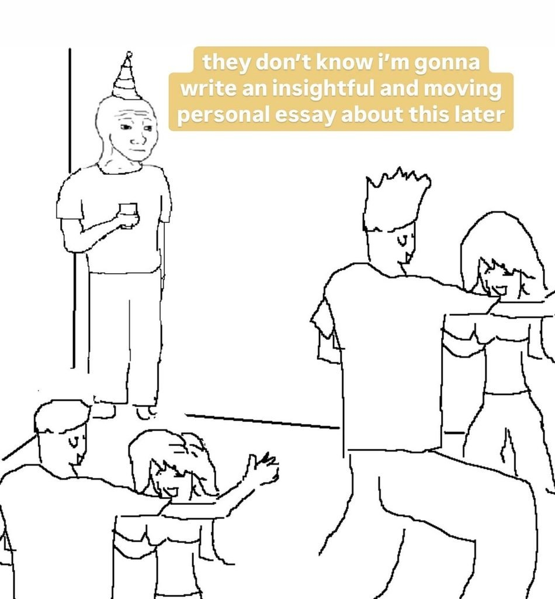
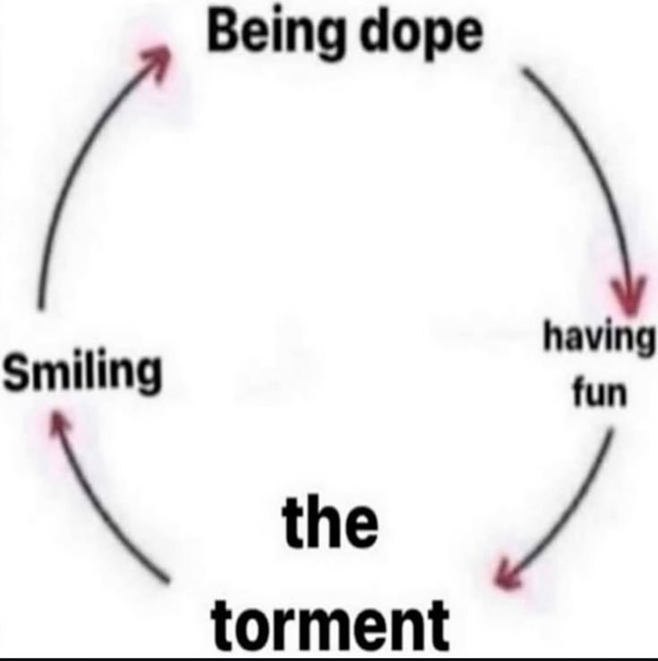

no soy ermitaña, soy una alquimista muerta de hambre
me lo dijo un tiktok ayer, mientras estaba tumbada de lado con la baba un poco en la almohada. «you are not a hermit, you are an alchemist starved of purpose.«

llevo meses diciendo que quiero estar sola. que quiero mi castillo, mi dragón, comer con las manos, bañarme sin testigos. lo escribí aquí, lo dije en voz alta, me lo creí. y ahora resulta que la soledad que antes me sabía a gloria me empieza a saber a pan duro, a casa cerrada, a ese olor de cuando no abres la ventana en tres días y ya ni lo notas. y el tiktok dice que eso pasa porque la soledad era una parada en el camino y no lo que yo soy. una gasolinera. y yo me había puesto a decorar la gasolinera con tapices y antorchas como si fuera a vivir ahí para siempre.
eso me da rabia. una rabia caliente JUSTO aquí en la boca del estómago, como cuando alguien te dice una verdad que tú ya sabías pero que querías decir tú primero.
luego dice otra cosa que me tocó más todavía. que soy lista con las emociones, que me doy cuenta de todo lo que pasa en una habitación, quién está incómodo, quién miente, quién se va a ir antes del postre, y que aun así hay algo que los demás ven y yo no. y la pregunta que me hago siempre, en las bodas, en los cumpleaños, en las cenas con el vaso de plástico sudándome en la mano: ¿cómo es que todo el mundo se lo está pasando tan bien? qué tienen ellos. qué parte del juego me explicaron mal o no me explicaron nunca. o si se lo están pasando bien de verdad o están fingiendo mejor que yo, que también puede ser, y eso casi me consuela.
y al final me llama amiga hiperanalítica, que ya me ofende un poco porque es verdad, y me dice que se me ha olvidado seguir la corriente. a la charla tonta, a las tradiciones tontas, y sobre todo a mi propósito en la vida. que ya sé que todo parece un juego sin sentido, pues que juegue. que use eso de estar un poco despegada de todo para no tener miedo, para tirarme a por lo que me encienda sin parar, y que me lo voy a pasar bien precisamente porque ya me importa menos.
de verdad que no sé.
porque una parte de mí quiere hacerle caso, ponerme el vestido, reírme en la boda, decir qué rico el vino aunque sea un vino de mierda que te deja la lengua morada. y otra parte piensa que esto es lo mismo que me decían de pequeña: sonríe, no pongas esa cara, juega con las otras niñas, no seas tan rara. y que ahora me lo dice un desconocido en internet y suena a sabiduría solo porque está bien escrito y son las dos de la mañana.
y luego está eso de que te va a ir bien porque te importa menos. no sé si quiero que me importe menos. a mí me importa todo demasiado, la tela de una silla, la forma de un reloj, la manta de mi abuela con el agujero, y yo creía que eso era lo único bueno que tenía. si me tiene que importar menos para pasármelo bien, no sé si el trato me compensa.

a lo mejor no estoy sola por miedo, a lo mejor estoy sola porque estoy cociendo algo que todavía no tiene forma, y el hambre no es de gente, es de saber para qué cuezo.
no sé si algún día voy a saber jugar al juego de los demás sin sentir que me traiciono un poco. ojalá. ojalá esto que siento ahora sea hambre y no vacío, y ojalá cuando salga de la cueva traiga algo en las manos que no tenía al entrar.
un beso x